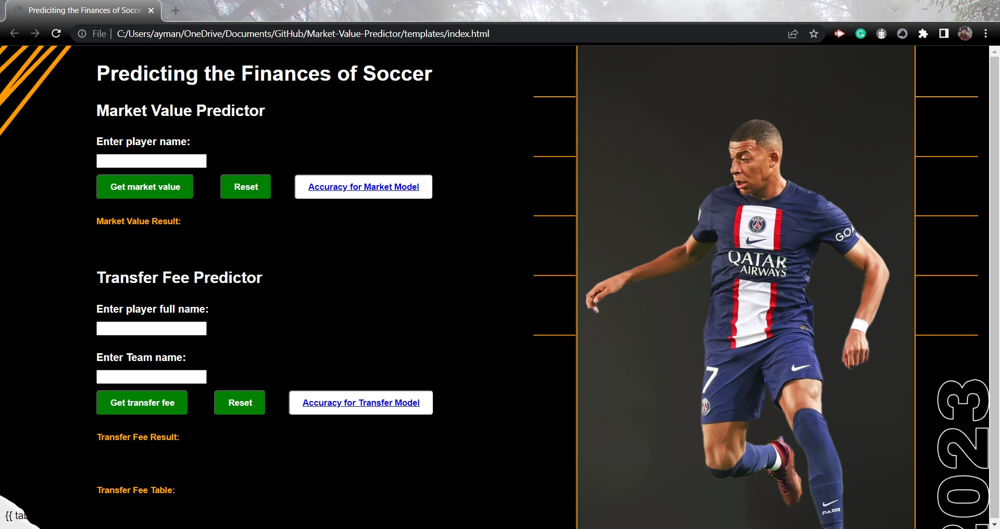
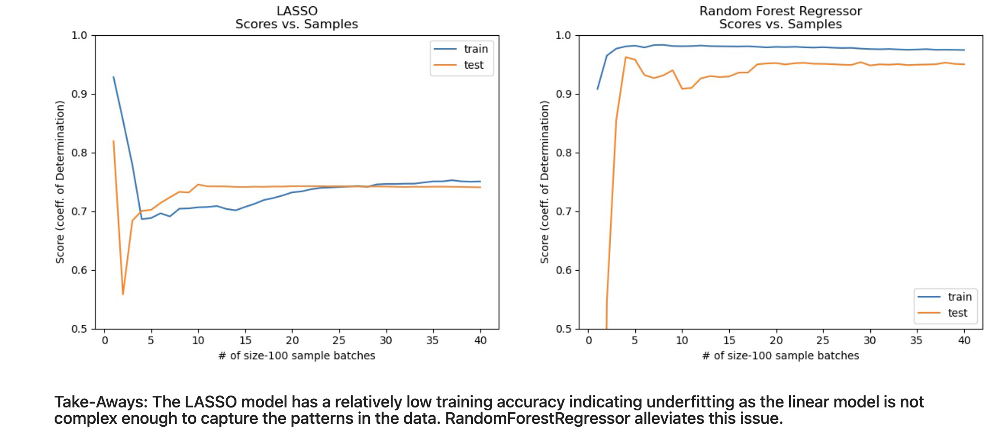
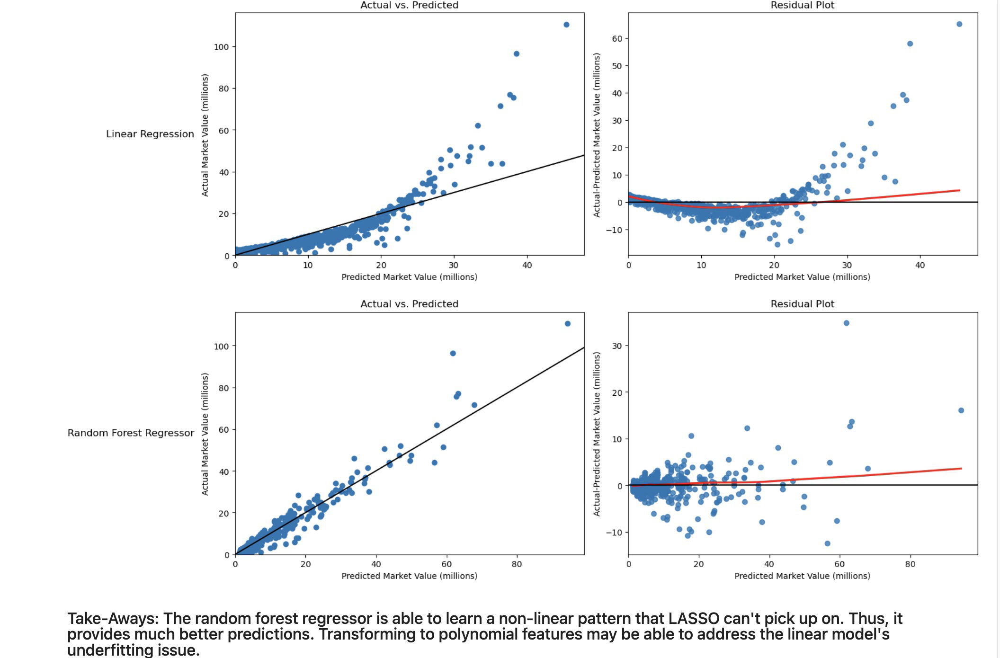
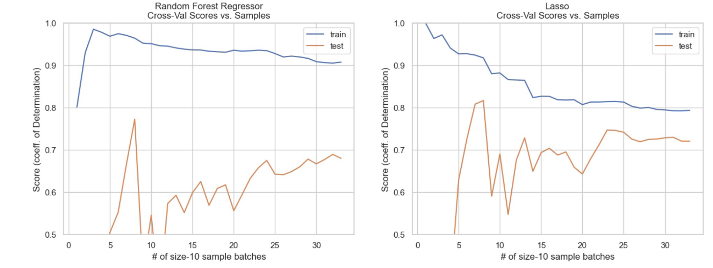
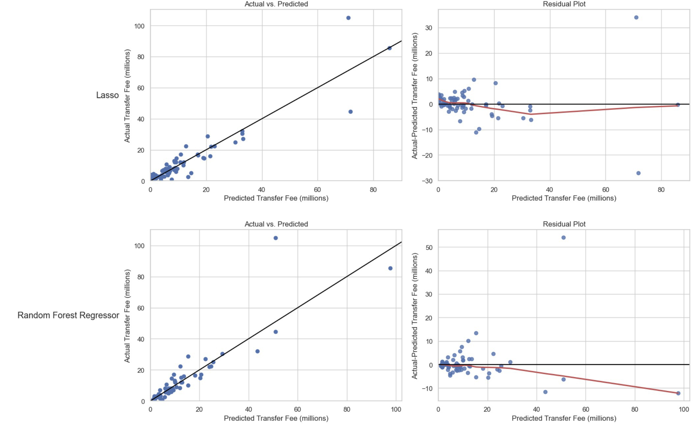
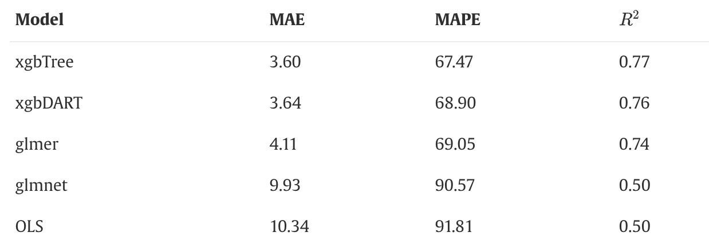

Abstract
In the world of soccer, the market value serves as one of the main sources for generating revenue for soccer clubs. Over the last few years, the money spent on the market value has sky-rocketed with FIFA, the governing body in soccer, revealing that soccer clubs spent $7.35 billion in player acquisitions just in 2019. In this high stake environment, with so much money involved, it is important for clubs to accurately assess the market value of players before submitting a bid to buy a player. However, the traditional crowd-sourced approaches have been questioned for their inconsistency and susceptibility to bias. Recognizing this challenge, we aim to build an alternative to the conventional crowd-sourced approach to determining a player’s market value, using the power of machine learning algorithms. Our project not only targets determining a player’s market value, but also addresses a more complex issue in soccer finance: the ‘transfer fee’. The ‘transfer fee’—the total cost a club pays for a player—extends beyond the player’s market value, incorporating additional monetary obligations imposed by selling clubs. In the project, we have developed a machine learning model that relies on linear regression and random forest algorithms to estimate the transfer fee. This model has the potential to help clubs and transfer agents for strategic financial planning and reducing the risk of overpayment.
Introduction
Soccer, globally referred to as football, is one of the most widely followed sports, boasting a fan base exceeding a billion as reported by FIFA in 2017. A critical aspect of this sport is the annual transfer windows, periods when soccer clubs can trade players, which significantly affect the clubs’ strategies and finances.
Interestingly, one of the renowned websites for these market valuations, Transfermarkt, stated that they do not use an algorithm but instead relies on the wisdom of the community to estimate valuations.Given the significant influence of these crowd-sourced values, it becomes crucial to establish fixed parameters for evaluating these values, ensuring consistency and fairness. Elmundo, a popular newspaper in Spain, confirms that sports directors and representatives of soccer clubs do recognize the values from Transfermarkt.
Upon realizing that most market values are crowd sourced, the primary objective in the project is to propose a model that assigns specific weights to pertinent parameters, hence ensuring consistency in accurately estimating a player’s market value in the transfer market.
Previous attempts at estimating player transfer values have revealed the importance of ratings. A ScienceDirect article (Coates & Parshakov, 2022) emphasizes the significance of ratings in the player’s transfer market value. Alternative rating systems exist, such as the plus-minus rating, which calculates a team’s net goals when a specific player is on the field (Sæbø, Olav Drivenes, and Lars Magnus Hvattum, 2015). Another comparable rating system, the Goal Impact Metric (GIM) (McHale, Benjamin Holmes, 2023), has proponents arguing its superior predictive capabilities. Nonetheless, our project chose to employ standard FIFA ratings from the FIFA game developed by EA Sports due to the extra time required to gather data on goals scored with a player both present and absent from a team.
Contrary to the referenced papers, which restricted their estimates to the English transfer market due to data limitations and potential market variations, our project has broadened its scope. We estimate player transfer fees across not only the English league but also the German, French, Italian, and Spanish leagues. This expansion was facilitated by an extensive dataset spanning FIFA editions from 2015 to 2020, merged with concurrent transfer data.
In our modeling approach, we’ve selected Lasso (Linear regression with regularization) and Random Forest algorithms. While advanced models, such as Elastic-net regression — which integrates lasso and ridge regression — have shown enhanced accuracy in predicting transfer fees, our choice leans towards standard models(McHale, Benjamin Holmes, 2023). We decided to use Linear Regression Lasso and Random Forest algorithms due to our familiarity with these standard methods and our curiosity to see how they compare against each other.
Values Statement
Football is such an amusing topic to work with in many aspects. Those who follow the sport are particularly interested in the market value as people like to see where their favorite player might end up in. We decided to track how much a player costs and how much a team must pay for a player for our project.
Potential users can be viewed from different perspectives, as those who follow football could use the app to check the market value of their favorite players as well as how much they would cost a club. Because our market value predictor model is so accurate, even teams can use it to forecast a player’s market value. Even though we have a complete transfer fee model, it is not very accurate, so teams may not benefit. Our model could also serve as a foundational basis for fantasy soccer in the sense that it provides a player’s transfer information, allowing fantasy soccer users to predict a player’s market value and transfer fee information and base their fantasy scores on that.
Fans and those looking for “numbers-based” market value and transfer fee predictions can benefit from our models because the bias is standardized across all players, which may also help official teams make decisions without bias. Official reporters could also use this model to compare players who may have biases with actual market value models to the same players who do not have biases with our market value model.
As personal soccer fans, we found this project to be a fascinating aspect of the world. Because of the various external factors that can affect market value, it is sometimes difficult to know how much a player will actually cost a club, but this model that we created can help us get a close-to-accurate enough result that will let us know that if a club were to buy a specific player, they would need to pay a specific amount that our model tells us. Our model also assists us in determining a player’s market value, which can tell us whether a player is highly rated or not, because our project also displays graphs that show that the higher the rating, the higher the market value a player has. This project assisted us in answering some of our personal interesting questions, as we had always wondered about player statistics without visiting individual club websites, whereas this model allows us to print important information about these plays that can tell us a lot.
In a nutshell, our model would assist many soccer fans in learning a player’s value based on two pieces of information provided by our model, and it would assist the world of football in understanding the correlation between transfer fee and market value.
Materials and Methods
Data
Our project has been made possible through the compilation of data from three distinct websites, which served as primary sources for both training and testing our models.
Sofifa.com: This source primarily provides us with player ratings and potential scores and other attributes such as shooting scores, passing scores etc. from the popular video game series, FIFA, developed by EA Sports. The ratings are derived from the efforts of over 6,000 FIFA Data Reviewers, also known as Talent Scouts. (Murphy, 2021). This collaborative work helps ensuring that player ratings are continuously updated and reflective of their real-time performance .The site’s updates are carried out weekly, thereby providing us with relevant data.
Transfermarkt.com: This platform is our primary source for club data, serving as a resource for statistics related to clubs that individual players play for. Transfermarkt is a popular entity in the soccer world, known for its estimation of player market values. However, these values have been subject to criticism in the past, as noted in this New York Times article (Smith,2021). Consequently, for the purpose of our project, we’ve chosen to focus solely on factual club data. This includes league positions over the years, player rosters, amount of money spent in the market value, goals scored, and other quantifiable statistics that are a reliable record of the club’s performance.
Kaggle.com: Originally, our strategy was to compile transfer data from 2018, coinciding with the final update to the data in FIFA 2017, just prior to the opening of the 2018 market value—a period of three months during which soccer clubs are permitted to trade players. However, given the limited number of player trades that occur each year and the resulting time-intensive nature of annual data scraping, we found a more efficient solution. We found a large dataset on Kaggle, containing transfer data from European leagues from 1992 to 2021. This data was published by a Kaggle user, Bhavik Chadna, and was initially scraped from TransferMarkt.com. In a significant enhancement to our methodology, we segmented this dataset by league and by year. This allowed us to merge data for each league, for each year, with corresponding player data from the respective FIFA years, as obtained from Sofifa.com. The final stage of our data processing involved aggregating all our segmented datasets into a singular, comprehensive CSV file. The resultant dataset comprises transfer data from 2015 to 2021, from prominent leagues including La Liga (Spain), Premier League (England), Ligue 1 (France), Serie A (Italy), and Bundesliga (Germany). This was subsequently aligned with player data from the corresponding years from Sofifa. In sum, our project utilizes data from Kaggle, effectively harmonizing it with data from Sofifa and Transfermarkt. This integrative approach ensures that our model is trained on the most comprehensive and accurate data possible.
Upon gathering and filtering the data, we finalized with two distinct datasets for each of our project models.
Market Value Model: This model is centered around the dataset derived from Sofifa’s FIFA 2017 statistics. This dataset comprises a total of 5700 observations, each comprising 59 features. Looking back, we recognize that the volume of observations could have been significantly expanded by integrating data from multiple years of FIFA. However, due to time constraints and satisfactory performance of the model with the current dataset, we concluded that the expansion was not required.
Transfer Fee Model: Our second model, focusing on transfer fees, was trained and tested on a dataset, with 619 observations and 78 distinct features. Although the dataset encompasses transfer records spanning from 2015 to 2021, the relatively small number of observations underlines an important aspect of the soccer market value: only a limited number of players are traded each year.
Our sources hold a good ethical standard mostly because of the nature of sports data, including soccer, which is generally made public. Soccer clubs are usually open about player transfers, making our sources such as Transfermarkt essentially collection points for this readily available information.
Approach
NOTE: For much more on the specifics + useful resources that helped us w/ this portion of project, refer to: Project.ipynb file in Github Repository
Market Value Model:Our imported data was fairly clean and we had plenty of samples and features (5700, 59). When preparing our data for model training, we dropped categorical features like name and field position and any samples with features containing N/A values. Also, we dropped release clause and wage because these features seem to be calculated by Fifa with the same formula that is used for market value so they were biased predictors. After all this, we got down to 5010 samples and 57 features. We used 20% of this data as a holdout test set and randomized our test_train_split because our original data was ordered by the player’s overall rating and we didn’t want the model to train on “good players” and test on “bad players” at the tail end of our dataset. We standardized our data using Sklearn’s StandardScaler() so the coefficients of our linear predictors could be more easily interpreted. Our target vector was the “value” column of our data and the rest of the features comprised our feature matrix.
Thereafter, we performed feature selection. We combined univariate feature selection approaches like mutual information and ANOVA with recursive feature elimination (w/ cross-validation) using Lasso Linear Regression to select the “most important” predictive features.
We trained our models on the standout selected features from our univariate + RFE approach (Age and overall rating seemed to be the most important ones). We used a LASSO model and a RandomForestRegressor model to observe the difference between linear and non-linear patterns.
To examine model success, we computed the score (coefficient of determination) on the holdout set and used cross-validation as well to ensure that the ranndomness of the train test split wasn’t giving us optimistic or pessimistic results on the holdout set.
We also plotted learning curves, actual vs. predicted, and residuals to visually aid in examining our model’s underfitting/overfitting tendencies.
Transfer Fee Model:Our imported data had 708 samples and 78 features but it was not very clean. We had to subset the data for modeling to just field players (excluded goalkeepers) because goalkeepers had N/A values for many of the non-goalkeeping related features. We got down to 414 samples and 73 features (dropped categorical ones) for our field player data that we would use for modeling. We used 20% of this as a houldout test set and randomized our test_train_split. We standardized our data using Sklearn’s StandardScaler() so the coefficients of our linear predictors could be more easily interpreted. Our target vector was the “fee_cleaned” column of our data (which we turned into millions) and the rest of the features comprised our feature matrix.
Based on the literature from Ian G. McHale, Benjamin Holmes(https://www.sciencedirect.com/science/article/pii/S0377221722005082#bib0029), we engineered two features with high predictive power: avg. price paid by selling club and avg. price paid by buying club.
We performed the same process for feature selection as described for the market value model. The most notable and intuitive of these features were: ‘fee_cleaned_buyer_avg’(avg. price paid by buying club), ‘fee_cleaned_seller_avg’(avg. price paid by selling club), ‘value_eur’(market value). We also used age and potential as features because in the literature these features were deemed important by the author’s models.
Once again, we used a LASSO and Random Forest Regressor to obseve differences between the linear and ensemble approaches.
Given that this was a more complicated task than predicting market value, we tuned hyperparameters to squeeze out the best possible model performance for each model using nested cross-validation as we also wanted to use cross-validation to assess the success of the model with the best hyperparameters without optimistic biases.
We also computed the accuracy of the model on the holdout-set and used cross-validation, though neither of these measures were robust performance estimates as we had hoped them to be as is further explained in the results section.
We also plotted learning curves, actual vs. predicted, and residuals to visually aid in examining our model’s underfitting/overfitting tendencies.
We also performed an audit for bias by nationality. We picked 4 relatively well-represented countries (enough/similar amount of samples) in our dataset that are associated with great football players: England, France, Italy, Germany. First, we examined the disparities in “actual” transfer fee values for these countries in the dataset. We then used our “best” model for predictions to examine the disparities in “predicted” transfer fee values for these countries using both mean and median since outliers (though an integral and non-trivial aspect of the football market) made some predictions for some countries appear worse than others. We determined a threshold for “good” predictions and calculated the proportion of good predictions by country to further assess bias possibilities.
Implementing a Small User Interface for our Model
After receiving nearly 90% accuracy for our market value mode, we decided to build a small user interface for our model that, upon receiving a player’s name via user input, outputs the player’s predicted market value. We also integrated our market value model into the UI, which calculates how much a team would have to pay for a player.
We started by creating separate Python files for each of our market value codes and market value codes, which we then used as modules in our main Flask backend file. After we finished our modules, we used conditionals to incorporate them into our flask file, and each module would run upon the retrieval of each user’s input. A minor disadvantage of our program is that, because the model divides the data set into training and testing, not all players are available; thus, it may take a few input tries to obtain the market value of a specific player (for example, if the user enters “Robert Lewandowski” and he is in the testing data set, his value will be displayed; otherwise, the user may need to enter his name a couple of times until he is in the testing data set). We created our main front end designs using HTML, CSS, and JavaScript in one HTML file. We created our main front end designs in one HTML file by combining HTML, CSS, and JavaScript. The frontend itself was not complicated, as it only required sufficient time for page design, such as the colors, margins, and positions of each attribute visible in the UI.
Instructions for using the UI: - Navigate to the Github repository. - Download all of the files because each one is important to the model and app. - Then open the Python files and navigate to the directory where you saved them on your computer. - Then, within the Python notebook, run app.py, then navigate to the command shell and run the following command: python app.py - You can experiment with the UI by clicking on the link provided in the command shell. Unfortunately, because this is a - built-in Flask webpage, the link cannot be shared; thus, this is the only way to experiment with the app. - When running the Market Value Model UI, player names are formatted like “R. Lewandowski,” where the first name is abbreviated to just the first letter with a period and the last name, whereas for some players with no big last name, such as “’Neymar Jr,” the first name is spelled out and the last name is kept as is. Whereas the player name is formatted with their full name for the Transfer Fee Model, such as “Robert Lewandowski”.

Disclaimer: The UI currently does not look like this, as Flask cannot render the background image. We edited the design to work in accordance with Flask, but the goal was for it to look like the image above which we did code but would only display as we opened the HTML file without the backend code. The original is similar, but with a white background instead of the background image which was designed by Anweshan.
Results
Market Value Model:Accuracy Measures:
Summary:
LASSO: About 75 % accuracy on both holdout & cross-validation approach
RFR: About 95 % accuracy on both holdout & cross-validation approach
Learning Curves From Project File:

Actual vs. Predicted + Residual Plot From Project File:

Transfer Fee Model:Summary:
NOTE: Scores fluctuate from about the 60-70 % range based on the train_test_split. This could be accounted for by refitting and rescoring through various train_test_split loops, but is very time consuming.
LASSO: About 65 % accuracy using cross-validation; About 85 % on holdout set
RFR: About 70 % accuracy using cross-validation approach; About
Learning Curves From Project File:
 #### Take-away:
Actual vs. Predicted + Residual Plot From Project File:
 NOTE: The residual plots have different y_axis limits to account for data-specific outliers, so double checking the axis to interpret the residual plot instead of doing it spatially is important. #### Take-away: Both models are relatively accurate when predicting smaller transfer fees, but the higher the transfer fee goes, the less accurate the predictions are. Some outliers throw the models off.
Concluding Discussion
We were able to meet most of our goals as we developed a market value & transfer fee model and also a UI for them.
Our results for the market value model matches up almost identically with that of the literature as our RandomForestRegressor model’s about 95% accuracy matches theirs: “Random Forest Regression also provided a significant improvement over the baseline model, with an RMSE of 1.64 and an R-squared score of 0.95.” (M. A. Al-Asadi and S. Tasdemır, https://ieeexplore.ieee.org/document/9721908)).
Our tranfer fee results, don’t match up as well with the literature because we don’t have a robust perfomance estimate. Though our cross validation scores of about 60%-70% for both models seem to be come somewhat close to that of the literature, though it is positively biased by data leakage.
 Image from literature: McHale, Benjamin Holmes, 2023
I think ways to improve our transfer fee model, would be: - Gather more samples & Useful Predictive Features (like Goal Impact Metric) - Engineer Useful Powerful Features (like contract time left in weeks) - Use k-fold target encoding and standard scaling, so that we could use cross validation without data leakage as more robust performance estimator - Look into bootsrapping for possible form of performance estimates
Group Contributions Statement
Our project basically consisted of three sections: data collection and analysis, modeling the data to obtain predictions, and coding up the user interface. Anweshan handled the data side, while Hedavam and Ayman did contribute to the section by scraping half of the data required for the market value model. Later, Hedavam used the data that Anweshan had analyzed and cleaned to create a best-fit model that would provide us with good accuracy and predictions. Ayman and Anweshan assisted with the modeling by performing feature engineering to determine which variables would be delivered to Hedavam, who would use those variables to create the model. Ayman handled the final section of coding up the user interface because the code required the integration of JavaScript, HTML, CSS, and Python, whereas Hedavam provided the overall model code to support the UI, and Anweshan created the digital preview of the UI that appears appealing to the user at first glance. Moving on from the actual project code, each group member discussed their own sections within the Materials and Methods section, while also dividing some sections within each other. Anweshan was in charge of the Abstract and Introduction section, Ayman of the Values Statement and Group Contributions Statement, and Hedavam of the Results and Concluding Discussion. Work was distributed evenly, and everyone brought in work that demonstrated the effort they put into the project.
Personal Reflection
This project has helped me learn a lot about the process of using Machine Learning for aspects in the real world. This project helped me intertwine my skills obtained in class with something I am actually passionate about. This project not only taught me about the ways to use ML Models, but it also helped me gain furthur skills in web/data scraping using R, frontend coding using JavaScript, CSS and HTML, and backend coding using Flask within Python. Spending all nighters in Davis was the fun and enjoyable experience that helped me and my team finish this project as well as obtain enormous amounts of knowledge that will help us prosper in our future careers. I plan to work more with this project as I want to be able to properly execute the UI into a webpage where I can share links with others, and hopefully use the skills acquired in this project in my future career, as I aspire to either be a software engineer or a data analyst. In a quick summary, I learned how to take in datasets, feature engineer them to accordance with our objectives, use different ML Models to obtains predictions of our aims goal, and later use that model to create a UI. I also learned how to shrink all these informations into a nice deliverable that can be presented to other people which was an interesting learning experience. Overall, this project fulfilled my goals of learning the techniques of Machine Learning in terms of implementation and experimentation with multiple datasets and in accordance with aspects in the real world, and I hope to furthur my goals as I try to put myself as a professional in the technological world.
Link to our Project Github
https://github.com/aymankhan2003/Market-Value-Predictor